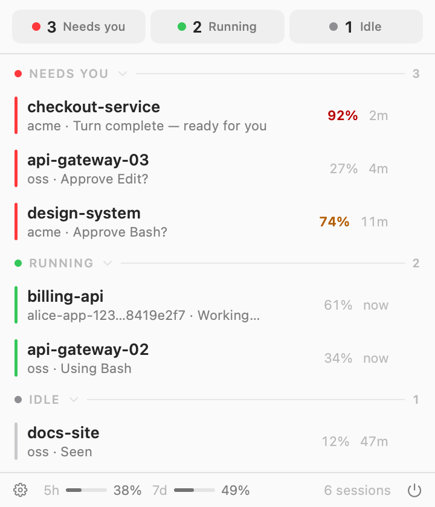

Claude Code session monitor
Know which coding session needs you
Agent Tracker is a free, open-source macOS menu bar app. Three dots (red needs you, green running, grey idle), a dropdown of every Claude Code session, and click-to-focus that jumps to the right terminal, wherever it lives.
↓︎ Download for MacRequires macOS 14+ · Apple Silicon & Intel · Signed and notarized

Prefer Homebrew?
brew tap ThinkVelta/tap brew trust --cask thinkvelta/tap/agent-tracker brew install --cask agent-tracker
The trust line is Homebrew 6's guard for
third-party taps. Without it the install refuses to load the cask.